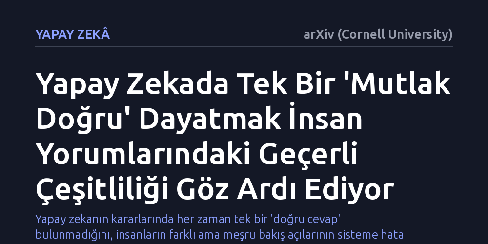

YAPAY-ZEKA · arXiv (Cornell University) · 2026-10-11
Çalışma, insan odaklı yapay zeka sistemlerinde tek bir mutlak doğru kabulünün insan algısındaki belirsizlikleri nasıl etkilediğini inceliyor. Araştırmacılar, insan yorumlarındaki geçerli farklılıkları gürültü sayıp tek hedefe indirgemenin zengin algı çeşitliliğini dışladığını ve olası yorum uzayının modellenmesi gerektiğini savunuyor.
Yapay zekanın kararlarında her zaman tek bir 'doğru cevap' bulunmadığını, insanların farklı ama meşru bakış açılarının sisteme hata değil zenginlik kattığını gösterir.

Günümüzde yapay zeka sistemleri yalnızca fabrikalardaki makineleri yönetmekle kalmıyor; iş başvurularını eliyor, kredi uygunluğunu puanlıyor ve sosyal medyadaki paylaşımların zararlı olup olmadığına karar veriyor. Bu sistemlerin neredeyse tamamı, her girdi için nesnel ve tek bir 'mutlak doğrunun' var olduğu varsayımı üzerine inşa ediliyor. Mühendisler, bir metnin, fotoğrafın ya da insan davranışının yalnızca tek bir doğru cevabı olduğunu varsayarak algoritmaları bu hedefe ulaşacak şekilde eğitiyor.
Oysa insan algısı ve toplumsal yargılar söz konusu olduğunda tek bir doğrudan bahsetmek çoğu zaman imkansızdır. Bir cümlenin ince bir kinaye mi yoksa doğrudan bir hakaret mi içerdiği, bir görselin estetik mi yoksa rahatsız edici mi olduğu kişiden kişiye değişir. Bu farklılıklar insanların deneyimlerinden, kültürel birikimlerinden ve dünya görüşlerinden kaynaklanır.
Mevcut yapay zeka modelleri ise bu fikir ayrılıklarını ya çoğunluk oylamasıyla tek bir etikete indirgiyor ya da verideki bir 'kusur' ve 'gürültü' sayarak ayıklıyor. Farklı ama geçerli insan bakış açılarını silen bu yaklaşım, insan odaklı kararlar vermesi beklenen sistemlerin insan toplumunun en temel niteliği olan çok sesliliği kaybetmesine yol açıyor.
Bu çalışma, laboratuvarda toplanmış yeni bir veri setini ya da deneysel bir algoritma performansını ölçen klasik bir deney içermiyor. Bunun yerine yapay zeka mühendisliğinin temelini oluşturan kabulleri masaya yatıran kavramsal bir tutum belgesi (position paper) niteliği taşıyor. Araştırmacılar, modern makine öğreniminin veri toplama, etiketleme, eğitme ve değerlendirme adımlarını yöntemsel ve felsefi bir süzgeçten geçiriyor.
İncelemenin merkezinde, veri etiketleme sürecindeki insan çeşitliliğinin modellere aktarılma biçimi yer alıyor. Geleneksel yaklaşımlarda örneğin beş insan etiketleyiciden üçü bir mesaja 'saldırgan', ikisi ise 'sert ama zararsız' dediğinde, çoğunluğun tercihi tek mutlak gerçek ilan edilir. Kalan iki kişinin meşru değerlendirmesi ise veri tabanından silinir. Yazarlar, bu sürecin matematiksel olarak pratik görünse de insan merkezli yapay zeka iddiasıyla çeliştiğini gösteriyor.
Araştırmacıların ortaya koyduğu temel bulgu, yapay zekanın tek bir yapay hedefe odaklanmak yerine olası meşru insan yargılarının oluşturduğu 'yorum uzayını' modellemesi gerektiğidir. Yazarların vurguladığı gibi, 'aynı girdiye yönelik birden fazla yorum aynı anda hem makul hem de geçerli olabilir.' Dolayısıyla bir yapay zekanın başarısı, karmaşık bir sosyal olguyu tek bir sayıya sıkıştırmasında değil, insanların o duruma getirdiği meşru yorum yelpazesini yansıtabilmesinde aranmalıdır.
Bununla birlikte çalışmada kritik bir ayrımın altı çiziliyor: Gerçek anlam belirsizliği ile dikkatsizlikten doğan etiketleme hataları birbirine karıştırılmamalıdır. Bir etiketleyicinin yorgunluktan yanlış butona basması elenmesi gereken teknik bir hatadır; ancak farklı hayat tecrübelerine sahip insanların aynı veriyi farklı yorumlaması modelin kavraması gereken zengin bir bilgidir. Sistemlerin bu iki durumu ayırt edebilecek yetkinliğe kavuşturulması önerilmektedir.
Yorum uzayının modellenmesi çağrısı, yapay zekanın yalnızca kodlama aşamasını değil; değerlendirilmesini, kullanım alanlarını ve denetim mekanizmalarını da doğrudan dönüştürmeyi gerektirir. Bir yapay zekayı test ederken 'model tek bir doğru cevabı bildi mi' diye bakmak yerine, modelin toplumdaki farklı ve geçerli insan yorumlarını ne ölçüde kapsayabildiğini ölçen yeni değerlendirme ölçütlerine ihtiyaç vardır.
Tek bir mutlak doğru dayatmasından vazgeçildiğinde yapay zeka sistemleri, insanların yerine nihai hüküm veren otoriter yargıçlar olmak yerine, kararların taşıdığı karmaşıklığı ve farklı bakış açılarını kullanıcının önüne seren dengeli danışmanlara dönüşebilir. Bu yaklaşım hayata geçirilebilirse, azınlıkta kalan deneyimlerin yapay zeka tarafından ezilmesinin önüne geçilebilir ve insan merkezli yapay zeka kağıt üzerinde kalan bir slogandan öteye taşınabilir.